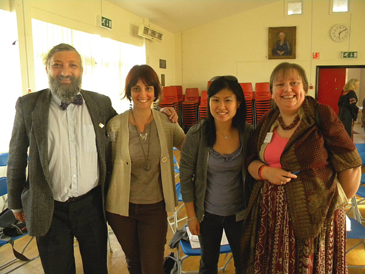
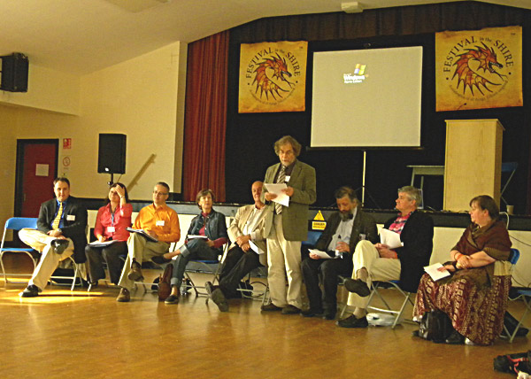
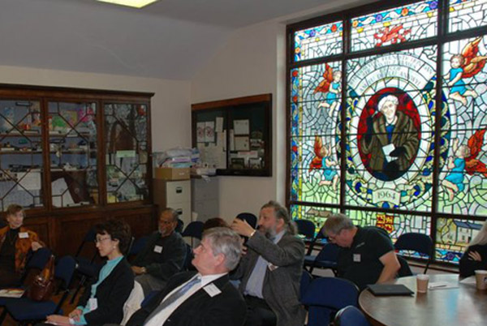
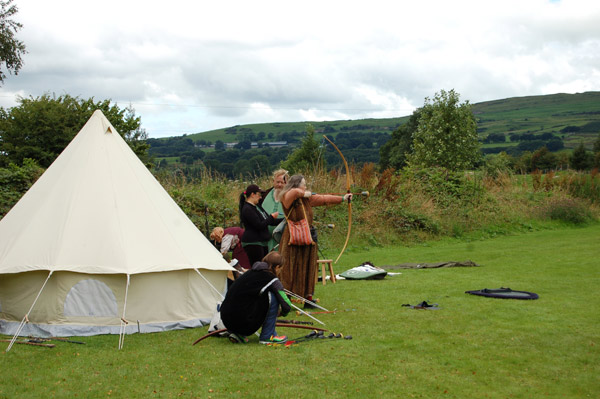
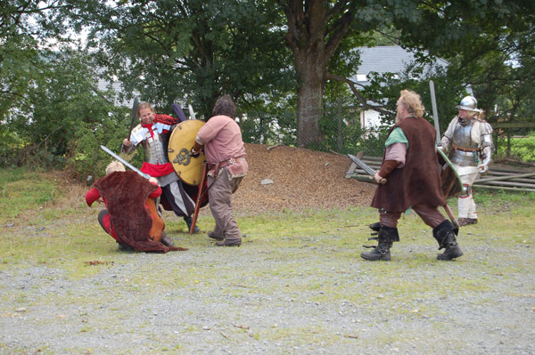
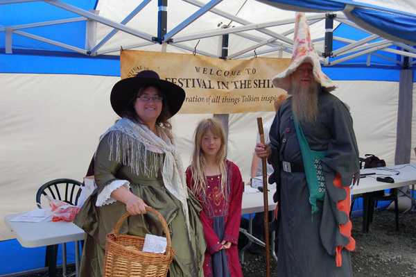
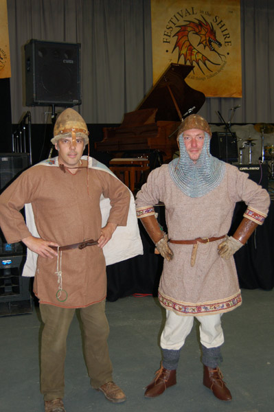
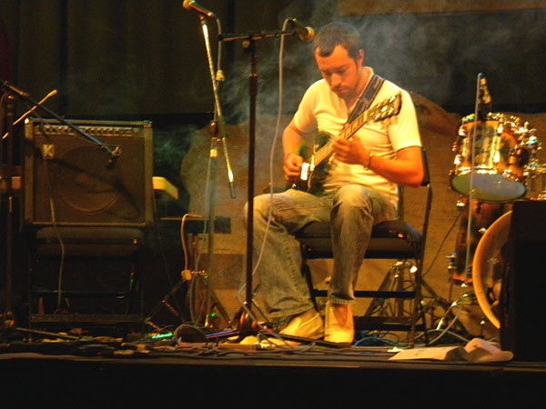
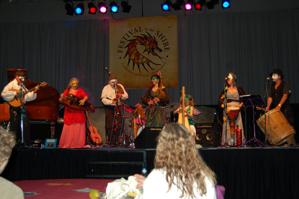
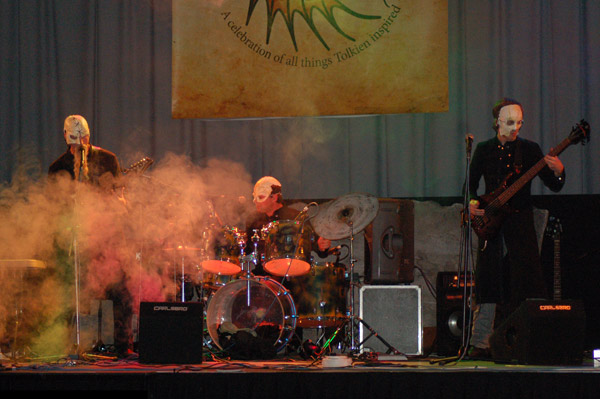

|
© 2021 Festival Art and Books. All rights reserved. Festival in the Shire in pictures |
|
|
Alex, Adina, Kaleena and Ruth |
 |
| Panel discussion with keynote speakers |  |
| Venue for the Conference - the village hall next to the pavilion with stained glass window backdrop |  |
| Live Action Role Play (LARP) by the Wyverns Tales LARP (www.wyvernstales.co.uk) and LiveAction UK (www.larpuk.co.uk) provided some great action during the weekend |  |
 |
|
| Festival goers were encouraged to arrive in costume and we weren't disappointed! |  |
 |
|
| A host of great talent provided entertainment throughout each day on the main stage.
Here a quarter of La Diskett plays a great solo (the other three quarters got lost in the Welsh hills and didn't make it back in time for their afternoon set) |
 |
| One of the highlights of the entertainment was the spellbinding multi-talented band Brocc. |  |
| ...and rounding off the evening was dark metal band Tor Marrock.
There truly was something for everyone! |
 |